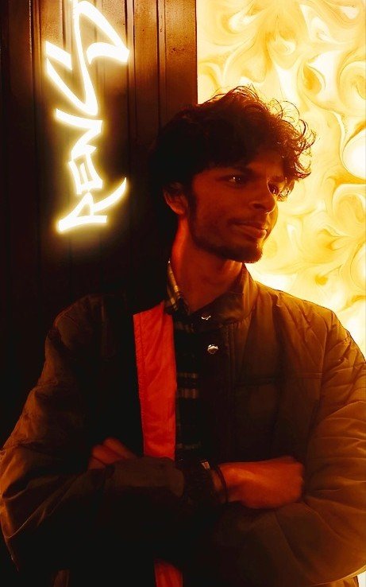

Sudhanshu Nirala RENSTEIN
Hi, I'm Sudhanshu Nirala. My dream is to become the Greatest Roboticist. I design and build real physical machines — from precision 5-DOF manipulators and active vision turrets to 4-robot collaborative swarms and variable-height dynamic balance robots governed by modern control theory.

Why I Build Robots
To me, robotics isn't just software running in simulation. It's the physical convergence of mechanical design, power electronics, embedded firmware, and rigorous mathematical control theory.
Mastering the Physical Machine
I believe that real engineering mastery starts where the theory meets real-world non-linearities. When motors heat up, when joints flex under load, when sensors deliver noisy data, and when unmodeled friction threatens stability.
That is why I derived Denavit-Hartenberg matrices for my 5-DOF arm, why I tuned discrete PID loops with anti-windup clamping on my optical turret, why I formulated Artificial Potential Fields for my 4-robot swarm, and why I solve the Algebraic Riccati Equation to keep my variable-height robot balanced.
Every robot I build takes me one step closer to my dream of being the Greatest Roboticist.
"Things you do for the things you LOVE" — Sudhanshu Nirala
Kinematics & Manipulation
I engineered my 5-DOF arm with Base Yaw, Shoulder, Elbow, Wrist Pitch, Wrist Twist, and active gripping, controlled with PID, ADRC, and Fuzzy Logic.
View details →Active Optical Targeting
I built a 2-axis Pan-Tilt gimbal with computer vision tracking and tuned discrete PID to lock onto faces and cursor coordinates smoothly with zero overshoot.
View details →Collective Swarm Autonomy
I designed a 4-robot collaborative swarm running decentralized consensus algorithms and Artificial Potential Fields for dynamic formation and collision avoidance.
View details →Dynamic Variable-Height Balance
I built a two-wheeled inverted pendulum with servo knee linkages that bend across 3 height postures while my LQR controller keeps it standing straight upright.
View details →Explore My Work In-Depth
Visit dedicated pages to inspect my schematics, test my control algorithms in a live simulator, or watch my latest YouTube build experiments.
My Hardware Projects
Full technical breakdowns, vector CAD schematics, actuator dimensions, and control loop derivations for my 4 flagship robotics systems.
Interactive Lab Simulator
Drive my 5-DOF arm, calibrate the camera turret, click to command my 4-robot swarm, and test the 3 postures of my LQR balancing bot live in your browser.
YouTube & Build Logs
Watch me test prototypes, tune control loops, break mechanisms, and document crazy new robotics experiments on my channel @projectRenstein.
Control Theory & Engineering Arsenal
The core mathematical, algorithmic, and mechatronic competencies I apply every day when building autonomous machines.
Control Theory & Observers
I formulate controllers that reject disturbances, payload shifts, and dynamic uncertainties in real time.
- Classical PID & Anti-Windup Clamping
- ADRC (Active Disturbance Rejection Control)
- Extended State Observers (ESO)
- Fuzzy Logic Adaptive Gain Scheduling
- LQR (Linear Quadratic Regulator) State-Space
Kinematics & Multi-DOF Systems
I derive analytical equations and solve numerical inverse kinematics for multi-joint serial manipulators.
- Denavit-Hartenberg (DH) Convention
- Forward & Inverse Kinematics (FABRIK / DLS)
- Jacobian Matrices & Singularity Decoupling
- Articulated Servo Knee Linkages
- Parallel & Tendon-Driven Grippers
Swarm Robotics & Active Vision
I build multi-robot consensus mesh networks and high-speed optical tracking gimbal mechanisms.
- 4-Agent Swarm Consensus Protocols
- Artificial Potential Fields (APF)
- Decentralized Formation & Collision Avoidance
- Real-Time Face Landmark Detection
- Pan-Tilt Optical Axis Closed-Loop Servos
Embedded Systems & Hardware
I write low-level real-time firmware, design power buses, and fuse multi-axis sensor streams.
- ROS 2 (Robot Operating System) & Micro-ROS
- Two-Wheeled Inverted Pendulum Dynamics
- IMU 6-Axis Sensor Fusion (Kalman Filter)
- Microcontrollers (STM32, ESP32, Teensy)
- High-Torque Servos, Motor Drivers & Encoders
The Roadmap to the Greatest Roboticist
A milestone journey of designing custom hardware, tuning mathematical control loops, and pushing physical autonomy forward.
Built My 5-DOF Robotic Arm with ADRC & Fuzzy Control
I designed, 3D-modeled, wired, and calibrated the complete 5-DOF arm: Base Yaw, Shoulder, Elbow, Wrist Pitch, Wrist Twist, and Gripper. I derived the DH parameters and wrote my own ADRC Extended State Observer to reject payload disturbances.
Built My Closed-Loop Face-Tracking Camera Turret
I constructed a 2-axis Pan-Tilt gimbal with computer-vision bounding-box tracking. I formulated discrete PID control with anti-windup clamping to eliminate tracking jitter and servo overshoot.
Engineered My 4-Robot Collaborative Swarm
I implemented a 4-robot decentralized collaborative swarm. I wrote Artificial Potential Field algorithms for dynamic multi-agent formation navigation and obstacle avoidance.
Engineered My Variable-Height Self-Balancing Bot (LQR)
I designed the wheeled-legged inverted pendulum robot with articulated knee linkages. I applied LQR optimal state-feedback control across 3 height postures (Low Crouch, Mid Stance, Stand Tall) with active upright stability.
Universal Physical Autonomy
I am unifying manipulation, active perception, collective swarms, and dynamic balance into generalized embodied physical intelligence — fulfilling my lifelong dream to become the Greatest Roboticist.